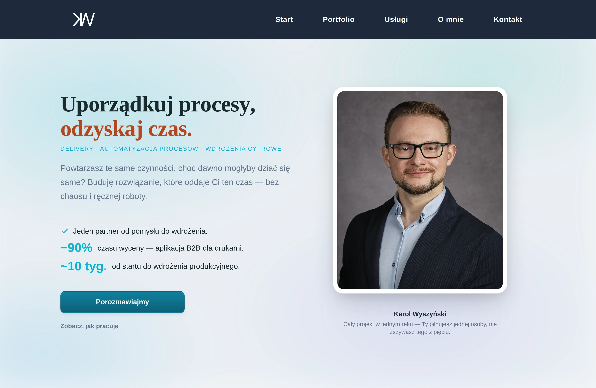
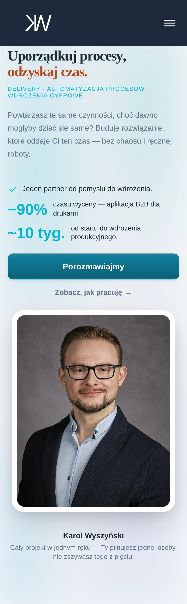
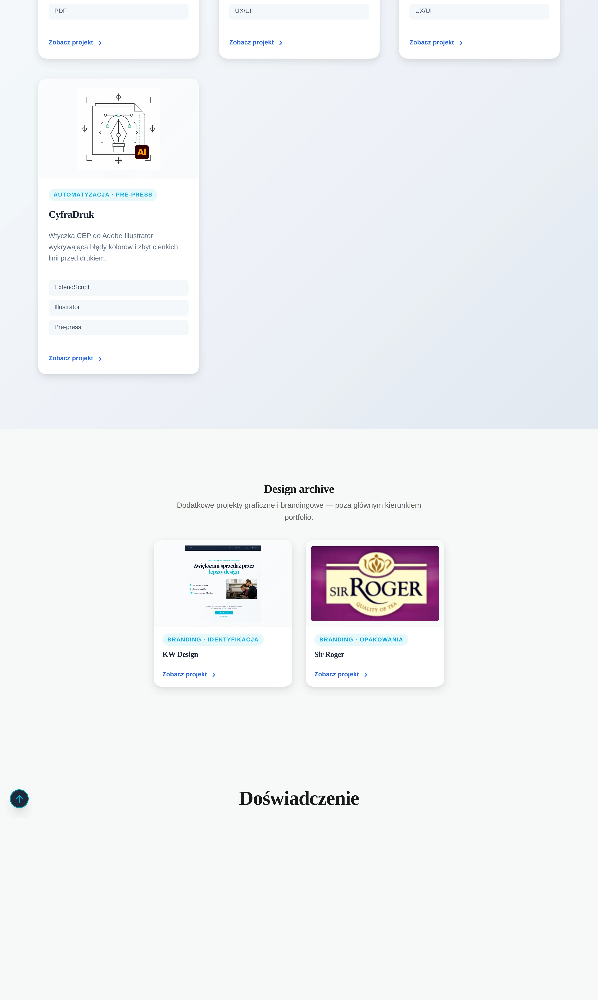
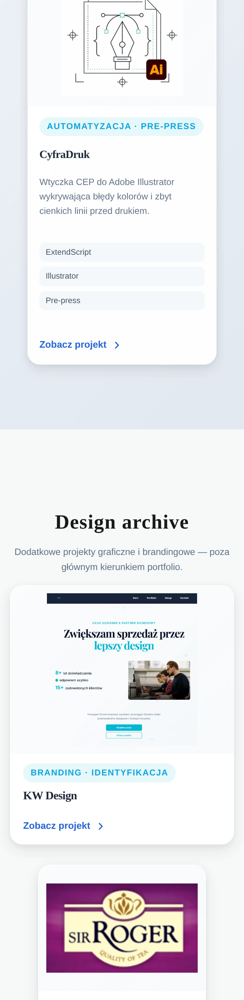
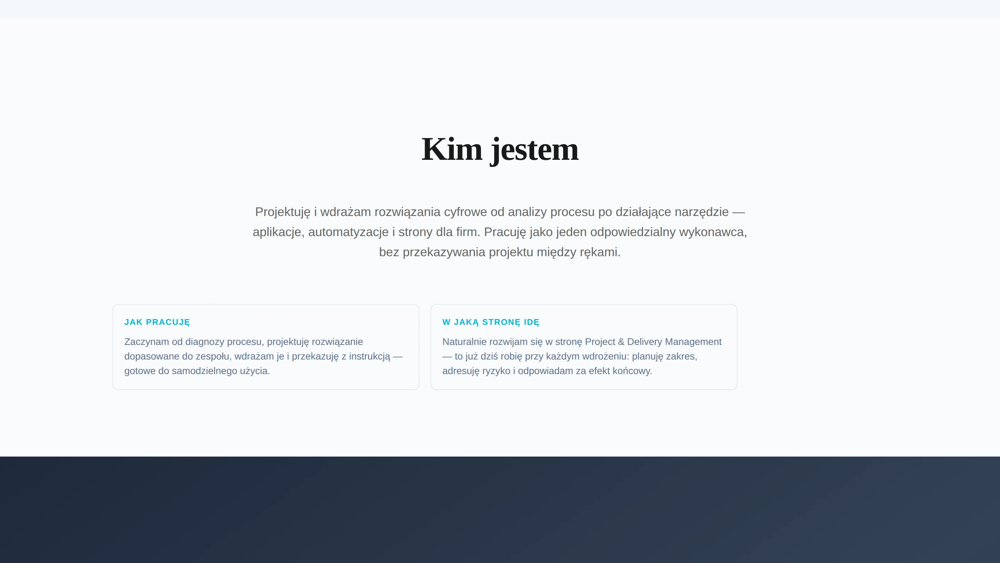
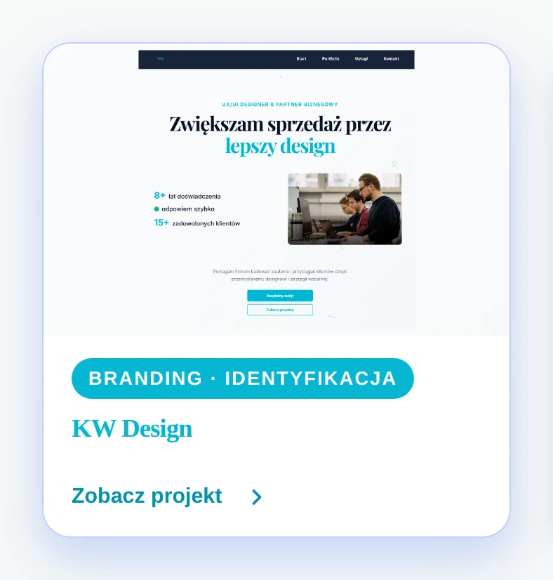

kwyszynski — QA wizualne sekcji
Zestaw zrzutów dokumentujących kluczowe sekcje strony kwyszynski (Start i Portfolio) na desktopie 1440 px i mobile 390 px. Materiał do case study „jak powstawało kwyszynski" oraz do przeglądu układu, balansu i spójności między stronami.
Priorytet 1Rdzeń QA — hero i separacja tierów

Po co: pokazać zawijanie eyebrow, balans tekst–foto i to, czy dwie statystyki nie wyglądają jak duplikat.
Obserwacja: komplet elementów łapie się w jednym ekranie (eyebrow → H1 → lead → 2 metryki → CTA + foto z podpisem). Eyebrow mieści się w jednej linii, metryki −90% i ~10 tyg. są wyraźnie różne — nie czytają się jak duplikat. Foto z podpisem dobrze równoważy kolumnę tekstu.

Po co: sprawdzić łamanie eyebrow, pionowy stack elementów i brak poziomego scrolla.
Obserwacja: elementy schodzą do jednego stacku, bez poziomego scrolla; eyebrow łamie się poprawnie. Hero jest dość wysokie — warto obserwować długość przy dłuższych metrykach.

Po co: od ostatniej karty Tier 1 do końca sekcji archive — czy archive czyta się jako niższy tier, a nie dalszy ciąg głównej listy.
Obserwacja: separacja tierów działa — zmiana tła (gradient → jednolite jasne) i węższy, wyśrodkowany 2-kartowy grid archive z uproszczonymi kartami (bez opisów/tagów) jasno komunikują niższy tier. Uwaga: ostatni rząd Tier 1 zostawia kartę „CyfraDruk" samą, z dwiema pustymi kolumnami obok — asymetria warta rozważenia (4 karty w gridzie 3-kolumnowym).

Po co: zwijanie do 1 kolumny, odstęp przed nagłówkiem archive i wygląd uproszczonych kart na małym ekranie.
Obserwacja: zwija się do 1 kolumny czysto; jest wyraźny oddech przed nagłówkiem „Design archive", a uproszczone karty (kategoria + tytuł + CTA) wyglądają kompletnie, nie „pusto".
Priorytet 2About i spójność footerów

Po co: ocenić 2-kolumnowy układ kart, spacing i przejście tła między sekcjami (kadr z odrobiną sąsiadów).
Obserwacja: dwie karty („Jak pracuję" / „W jaką stronę idę") są zbalansowane i wyrównane, tytuł i lead wyśrodkowane. Spacing sekcji spokojny; tło płynnie przechodzi między sekcjami.

Po co: łamanie tekstu i czystość układu footera na stronie Start.
Obserwacja: footer Start ma dodatkową linię opisu „Aplikacje, automatyzacje i strony — od analizy procesu po wdrożenie." pod linią roli.

Po co: porównać, czy footer wygląda spójnie na obu stronach.
Niespójność: footer Portfolio nie ma tej linii opisu — poza tym struktura identyczna. Do ujednolicenia między stronami.
OpcjonalneDomknięcie QA

Po co: czy kolumny schodzą do jednego stacku i czy spacing nie siada na mobile.
Obserwacja: kolumny schodzą do 1 stacku, karty pełnej szerokości, spacing zachowany — sekcja nie „siada".

Po co: czy skrócona karta archive nie wygląda na pustą albo uszkodzoną w stanie hover.
Obserwacja: hover działa poprawnie (podbicie kategorii, zoom podglądu) — skrócona karta jest kompletna, nie sprawia wrażenia pustej/uszkodzonej.